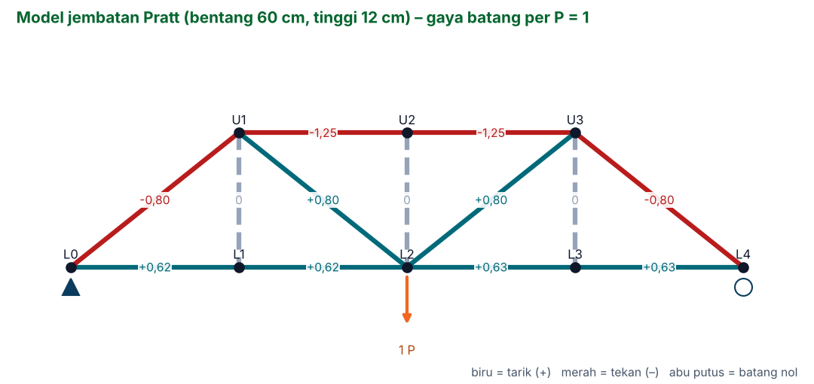
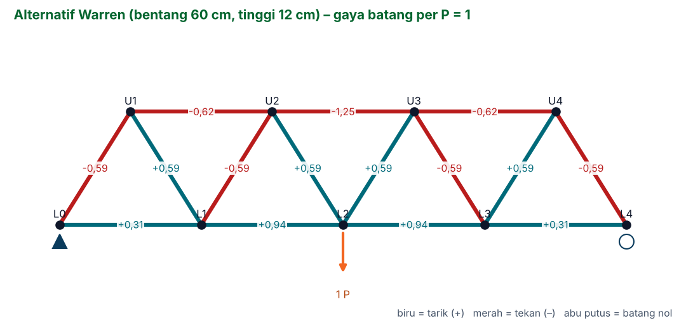

Minggu 12–15 • Sub-CPMK 4.2, 4.3, 5.1, 5.2 • CPMK-4 dan CPMK-5 • Team-Based Project RT-01 (30% nilai akhir) • Estimasi: 4 × (120 menit mandiri + 220 menit studio)
2. Capaian Pembelajaran
| Minggu | Sub-CPMK (RPS) | Indikator | Bobot |
|---|---|---|---|
| 12 | 4.2 Merencanakan model jembatan rangka | Sketsa rangka, beban rencana, dan tabel gaya batang lengkap | 5% (CPMK-4) |
| 13 | 4.3 Membuat model dan memprediksi batang kritis | Model sesuai gambar; batang kritis diprediksi dari hitungan | 5% (CPMK-4) |
| 14 | 5.1 Memverifikasi hasil hitung dengan perangkat lunak | Selisih manual vs perangkat lunak ≤ 5% dan dijelaskan | 5% TBP + 2% Partisipatif (CPMK-5) |
| 15 | 5.2 Menguji model dan mempresentasikan hasil tim | Prediksi vs hasil uji dibandingkan; laporan & presentasi memenuhi rubrik | 15% (CPMK-5) |
3. Peta Konsep Proyek
Bab 10 (gaya batang) → Mg 12: desain & tabel gaya batang
Data uji bahan (kapasitas tarik/tekan stik) → Mg 13: prediksi batang kritis & beban runtuh
Ftool/SAP2000/Alat Hitung → Mg 14: verifikasi ≤ 5%
Uji beban → Mg 15: prediksi vs kenyataan → refleksi & laporan
4. Apersepsi
Pertanyaan pemantik: Mengapa jembatan rangka yang beratnya hanya beberapa ton dapat memikul truk puluhan ton? Bagaimana insinyur tahu batang mana yang akan gagal lebih dulu – sebelum jembatan dibangun?
Tantangan tim: buat jembatan rangka bentang 60 cm dari stik es krim/balsa yang memikul beban titik di tengah dengan rasio beban runtuh / berat model sebesar mungkin – dan prediksikan beban runtuhnya sebelum diuji.
5. Uraian: Brief Proyek RT-01
| Butir | Ketentuan (RPS Bagian 8) |
|---|---|
| Tim | 4 orang; peran bergilir: koordinator, penghitung, perakit, pendokumentasi (dicatat di log) |
| Bentang & beban | Bentang bersih 60 cm di atas dua tumpuan meja; beban titik di tengah bentang (di titik buhul bawah) |
| Bahan | Stik es krim/balsa, lem kayu/lem tembak; dilarang memakai paku, kawat, atau bahan lain |
| Luaran | (1) Gambar rangka & tabel gaya batang; (2) lembar verifikasi perangkat lunak; (3) model fisik; (4) video uji beban; (5) laporan 8–10 halaman; (6) presentasi 7 menit + log kontribusi |
| Penilaian | Rubrik TBP (RPS Bagian 9). Nilai individu = nilai kelompok × faktor kontribusi (0,8–1,1) dari log aktivitas dan asesmen sejawat |
| Integritas & K3 | Pelindung mata dan area aman saat uji; data uji dicatat apa adanya |
11.1 Minggu 12 – Desain dan Tabel Gaya Batang
Tim memilih tipe rangka (Pratt, Warren, atau Howe), membuat sketsa berskala, lalu menghitung gaya batang per satuan beban P (P = 1). Contoh desain acuan:

Gambar 11.1. Desain acuan Pratt 4 panel (panel 15 cm, tinggi 12 cm): gaya batang per P.

Gambar 11.2. Alternatif Warren 4 panel: gaya batang per P.
| Batang (Pratt) | Panjang (cm) | Gaya per P | Sifat |
|---|---|---|---|
| Batang atas U1U2, U2U3 | 15,0 | –1,250 | Tekan terbesar |
| Batang ujung L0U1, L4U3 | 19,2 | –0,800 | Tekan |
| Diagonal U1L2, U3L2 | 19,2 | +0,800 | Tarik |
| Batang bawah L0L1 … L3L4 | 15,0 | +0,625 | Tarik |
| Vertikal U1L1, U2L2, U3L3 | 12,0 | 0 | Batang nol (beban tunggal di tengah) |
Perbandingan: Warren acuan memiliki tekan terbesar sama (–1,25 P di batang atas tengah) tetapi tarik bawah lebih besar (+0,94 P) dan lebih banyak batang tekan diagonal. Tim boleh memilih dengan alasan.
Keterangan: F_i = gaya batang ke-i (N); f_i = koefisien gaya per satuan beban (dari tabel); P = beban di tengah (N). Batasan: berlaku selama rangka berperilaku linear dan sambungan tidak gagal lebih dulu.
11.2 Minggu 13 – Perakitan dan Prediksi Batang Kritis
Uji bahan sederhana (studio): tiap tim menguji minimal 3 benda uji untuk (a) kapasitas tarik satu stik dengan sambungan lem, dan (b) kapasitas tekan stik pada panjang yang dipakai (mis. 15 cm dan 19 cm). Catat semua hasil, pakai nilai terkecil sebagai kapasitas rencana.
Keterangan: C_i = kapasitas batang ke-i dari uji (N), kapasitas tarik untuk f_i > 0 dan kapasitas tekan untuk f_i < 0; f_i = koefisien gaya batang. Batang dengan nilai terkecil adalah batang kritis. Batasan: belum memperhitungkan kegagalan sambungan dan cacat perakitan.
11.3 Minggu 14 – Verifikasi dengan Perangkat Lunak
Modelkan rangka di Ftool (atau SAP2000 versi pendidikan / Alat Hitung Rangka e-book) dengan koordinat yang sama.
Atur sambungan batang sebagai sendi (release momen) dan tumpuan sendi–rol.
Beri beban P = 100 N di titik tengah bawah.
Isi tabel verifikasi dan hitung selisih.
| Batang | Manual (N) | Perangkat lunak (N) | Selisih (%) | Penjelasan bila > 5% |
|---|---|---|---|---|
| U1U2 | –125,0 | [isi] | [isi] | [isi] |
| L0U1 | –80,0 | [isi] | [isi] | [isi] |
| U1L2 | +80,0 | [isi] | [isi] | [isi] |
| L1L2 | +62,5 | [isi] | [isi] | [isi] |
Kriteria (RPS): ≤ 5%. Penyebab umum selisih: koordinat berbeda, sambungan tidak diatur sebagai sendi, pembulatan.
11.4 Minggu 15 – Uji Beban, Laporan, Presentasi, Refleksi
Prosedur uji beban:
Timbang model (gram) dan ukur bentang.
Pasang model di atas dua tumpuan; gantungkan wadah beban di titik tengah bawah.
Tambahkan beban bertahap (mis. 5 N per langkah, tunggu 10 detik), catat lendutan visual dan bunyi.
Rekam video; catat beban saat runtuh dan batang/sambungan yang gagal pertama.
Hitung rasio beban runtuh / berat model; bandingkan dengan prediksi.
| Data uji | Isian tim |
|---|---|
| Berat model (g → N) | [isi] |
| Beban runtuh hasil uji (N) | [isi] |
| Beban runtuh prediksi (N) | [isi] |
| Selisih prediksi vs uji (%) | [isi] |
| Batang/sambungan yang gagal pertama | [isi] – sama dengan prediksi? Ya/Tidak |
| Rasio beban/berat | [isi] → peringkat kompetisi |
Laporan teknis (8–10 halaman, EYD V): 1) Pendahuluan & tujuan; 2) Desain & asumsi; 3) Hitungan gaya batang & tabel; 4) Data uji bahan & prediksi; 5) Verifikasi perangkat lunak; 6) Hasil uji beban & pembahasan; 7) Kesimpulan & saran; 8) Lampiran (gambar kerja, log kontribusi, foto/video).
Presentasi 7 menit: semua anggota berbicara; 1 menit desain, 2 menit hitungan & prediksi, 2 menit uji & perbandingan, 1 menit refleksi, 1 menit pelajaran untuk proyek nyata.
11.5 Rubrik Team-Based Project dan Log Kontribusi
| Kriteria (bobot) | Sangat baik (86–100) | Baik (71–85) | Cukup (56–70) | Kurang (≤ 55) |
|---|---|---|---|---|
| Ketepatan teknis (35%) | Semua hasil memenuhi prinsip statika, efisien | Memenuhi, inefisiensi kecil | Ada bagian tidak memenuhi | Banyak kesalahan teknis |
| Gambar / model / luaran (20%) | Lengkap, konsisten dengan hitungan | Lengkap, sedikit tidak konsisten | Kurang lengkap | Tidak sesuai |
| Laporan teknis (20%) | Runtut, asumsi & rujukan jelas, EYD V | Runtut, rujukan kurang | Kurang runtut | Tidak memadai |
| Presentasi & tanya jawab (15%) | Jelas, semua menguasai | Jelas, sebagian menguasai | Kurang jelas | Tidak menguasai |
| Kolaborasi & integritas (10%) | Peran jelas, log lengkap, data jujur | Peran jelas, log kurang | Kontribusi timpang | Pelanggaran integritas |
Sumber: RPS SIP3115 Bagian 9 (rubrik TBP). Rubrik ini disesuaikan dengan konteks proyek model jembatan; kata “SNI 1727:2020” pada rubrik asli tidak relevan untuk model stik sehingga cukup “prinsip statika”.
| Tanggal | Anggota | Kegiatan | Durasi | Bukti | Paraf sejawat |
|---|---|---|---|---|---|
| [isi] | [isi] | [mis. menghitung gaya batang panel 1–2] | [jam] | [foto/berkas] | [ ] |
Faktor kontribusi individu 0,8–1,1 ditetapkan dari log dan asesmen sejawat; nilai individu = nilai kelompok × faktor.
6. Contoh Soal & Pembahasan
Contoh 11.1 (prediksi beban runtuh) serta tabel gaya per P desain acuan Pratt dan Warren.
7. Tanya AI Tutor (pendamping proyek)
Pilih tipe rangka
Kami memilih antara Pratt dan Warren untuk model stik 60 cm. Ajukan pertanyaan agar kami membandingkan batang tekan terbesar dan jumlah sambungan.
Periksa prediksi
Ini tabel f_i dan kapasitas uji kami: [tempel]. Bimbing kami menemukan batang kritis tanpa memberi jawaban langsung.
Jelaskan selisih
Hasil Ftool berbeda 8% dari manual pada batang U1U2. Tanyakan hal-hal yang perlu kami periksa.
Cek laporan
Periksa struktur laporan kami terhadap 8 bagian di Bab 11 dan EYD V; beri saran, jangan menulis ulang.
Refleksi
Bantu saya menulis refleksi pribadi dengan 3 pertanyaan: apa yang saya pelajari, apa yang meleset, apa yang akan saya lakukan berbeda.
8. Zona AR – Model Jembatan Stik dan Uji Beban
| Aspek | Spesifikasi |
|---|---|
| Nama objek | ar-bab11-jembatan-stik.glb (+ .usdz) |
| Tujuan belajar | Melihat desain acuan dalam ukuran nyata, letak batang kritis, dan detail pelat buhul (Sub-CPMK 4.2–4.3) |
| Pembuatan model | Blender: model stik skala 1:1 (60 cm), tekstur kayu; animasi uji beban sampai batang atas menekuk; GLB ≤ 8 MB |
| Hotspot & label | (1) Batang atas kritis; (2) Batang ujung; (3) Diagonal tarik; (4) Pelat buhul; (5) Titik beban |
| Animasi | Penggeser beban 0–150 N: warna batang berubah dari hijau → kuning → merah sesuai rasio F/C |
| Kode QR | Menuju ar/bab-11.html |
| Cadangan | Gambar 11.1–11.2 dan video uji |
| Pertanyaan pengamatan | (a) Batang mana yang berubah merah lebih dulu? (b) Bagaimana pelat buhul membantu? (c) Apa yang terjadi jika batang atas dibuat dua lapis? |
- Batang kritis (tekan)
- Diagonal tarik
- Titik beban
Buka halaman AR penuh • Perangkat tanpa AR tetap dapat memutar model 360° dengan jari/tetikus.
9. Alat Hitung – Perencana Model Jembatan
| Aspek | Spesifikasi |
|---|---|
| Tujuan | Gaya batang per P, prediksi beban runtuh dari data uji tim, batang kritis, rasio beban/berat, tabel verifikasi |
| Rumus | \(F_i=f_iP;\ P_{runtuh}=\min_i C_i/ f_i ;\ \text{selisih}= F_m-F_s / F_s\) |
| Input | Templat rangka (Pratt/Warren/Howe; panel; tinggi); data uji kapasitas tarik & tekan per panjang batang; berat model; hasil perangkat lunak (untuk verifikasi) |
| Output | Tabel f_i; batang kritis & P_runtuh prediksi; tabel selisih manual vs perangkat lunak (warna ≤ 5% hijau); grafik prediksi vs hasil uji |
| Fitur | Ekspor CSV untuk lampiran laporan; templat log kontribusi; reset; salin; PDF |
| Kasus uji | Input | Hasil yang diharapkan | Rujukan |
|---|---|---|---|
| 1 | Pratt 4 × 15 cm, tinggi 12 cm, P = 1 | Atas –1,250; ujung –0,800; diagonal +0,800; bawah +0,625; vertikal 0 | Gambar 11.1 |
| 2 | Data uji contoh (600/150/110 N) | P_runtuh = 120 N; batang kritis U1U2 | Contoh 11.1 |
| 3 | Warren 4 × 15 cm, tinggi 12 cm, P = 1 | Atas tengah –1,250; bawah tengah +0,938; diagonal ±0,590 | Gambar 11.2 |
10. Studi Kasus / Proyek
Seluruh bab ini adalah proyek tim RT-01 (subbab 11.1–11.5).
11. Info Penting / Tips Lapangan / Peringatan K3
Tips Lapangan di 11.2; Peringatan K3 dan Integritas Data di 11.4.
12. Rangkuman
Proyek menghubungkan seluruh CPMK-4 dan CPMK-5: desain → prediksi → verifikasi → uji → refleksi.
Gaya batang ditulis sebagai koefisien per P agar mudah dipakai untuk berbagai beban.
Beban runtuh prediksi = kapasitas terkecil dibagi koefisien gaya; batang tekan dan sambungan sering menjadi batang kritis.
Verifikasi perangkat lunak: selisih ≤ 5% dan dijelaskan.
Kejujuran data dan pembagian peran sama penting dengan hasil uji.
13. Kuis Pemahaman Proyek (10 soal)
Bentang model jembatan RT-01 adalah …
Pembahasan: RPS Bagian 8.
Bobot TBP dalam nilai akhir …
Pembahasan: RPS Bagian 7.
Batang vertikal desain acuan Pratt bergaya nol untuk beban tunggal di tengah.
Pembahasan: Aturan batang nol.
P = 80 N pada desain Pratt acuan. Gaya batang atas = … N
Pembahasan: –1,25 × 80.
Kapasitas tekan batang atas 200 N. P_runtuh berdasarkan batang atas = … N
Pembahasan: 200 ÷ 1,25.
Manual –125 N; Ftool –121 N. Selisih = … %
Pembahasan: 4 ÷ 121 × 100.
Prediksi 120 N, hasil uji 85 N dengan sambungan lepas. Penjelasan paling tepat …
Pembahasan: Prediksi hanya mempertimbangkan batang.
Model 120 g memikul 96 N. Rasio beban/berat = … (g = 9,81 m/s²)
Pembahasan: Berat 1,18 N; 96 ÷ 1,18.
Satu anggota mengusulkan mengganti angka hasil uji agar mendekati prediksi. Sikap tim yang benar …
Pembahasan: Integritas (rubrik kolaborasi & integritas).
Usulkan dua perubahan desain untuk menaikkan rasio beban/berat dan perkirakan pengaruhnya dengan koefisien gaya.
Pembahasan: Rubrik: ide 30, analisis koefisien 50, komunikasi 20.
14. Refleksi Pribadi (jurnal minggu 15)
Apa peran saya dalam tim dan apa bukti kontribusinya?
Seberapa dekat prediksi tim dengan hasil uji? Mengapa?
Konsep Mekanika Teknik 1 mana yang paling terasa manfaatnya di proyek ini?
Apa yang akan saya lakukan berbeda jika mengerjakan jembatan nyata? Skala pemahaman: 1 2 3 4 5
15. Glosarium dan Referensi Bab
| Istilah | Arti |
|---|---|
| Batang kritis | Batang yang diperkirakan gagal paling dulu. |
| Faktor kontribusi | Pengali nilai individu (0,8–1,1) berdasarkan log dan penilaian sejawat. |
| Koefisien gaya (f_i) | Gaya batang akibat beban satuan P = 1. |
| Pelat buhul | Pelat penyambung di titik buhul. |
| Rasio beban/berat | Beban runtuh dibagi berat model; ukuran efisiensi. |
Tim Dosen PSD3TS PNP. (2026). RPS Mekanika Teknik I (SIP3115), Bagian 8–9: Rencana Tugas RT-01 dan rubrik.
Hibbeler, R. C. (2024a). Engineering mechanics: Statics (15th ed., SI units). Pearson. (Bab 6)
Leet, K. M., Uang, C.-M., Lanning, J. T., & Gilbert, A. M. (2018). Fundamentals of structural analysis (5th ed.). McGraw-Hill. (Bab 4)